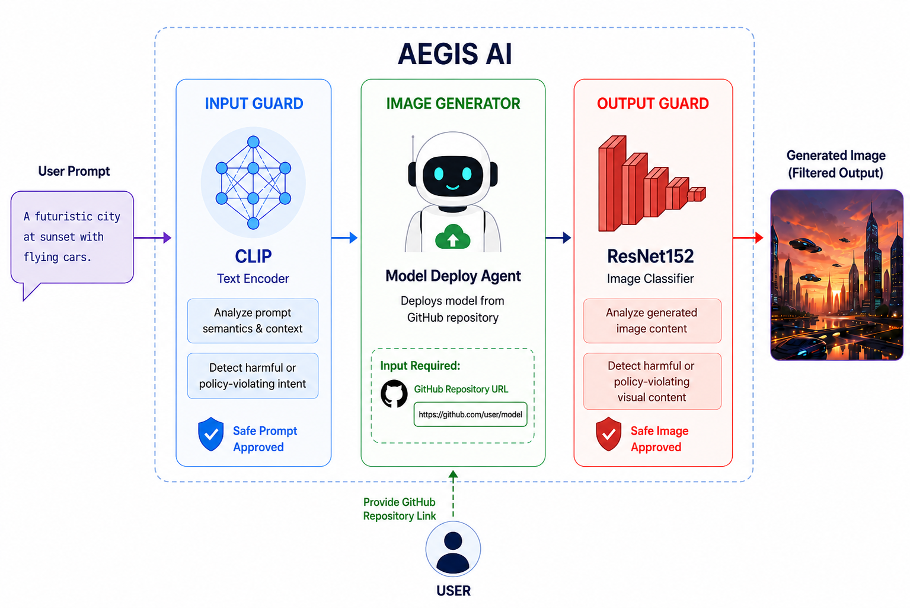
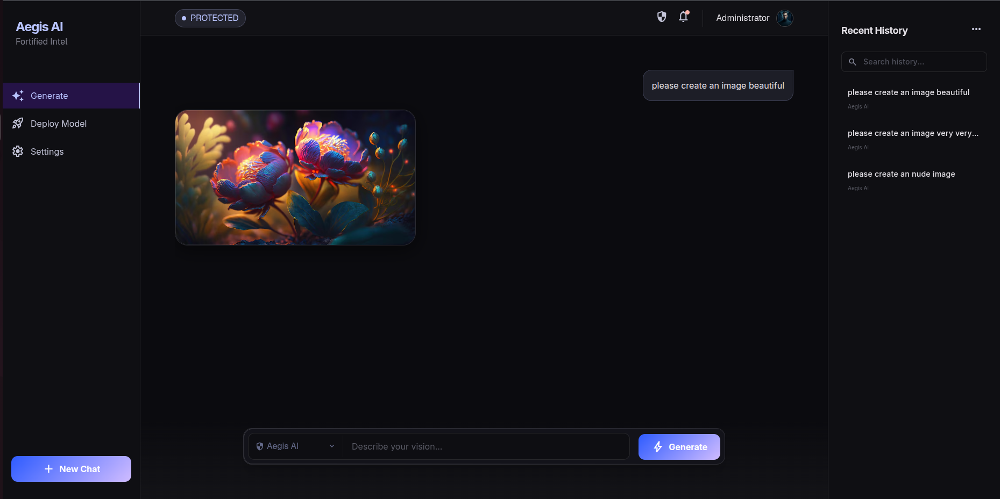
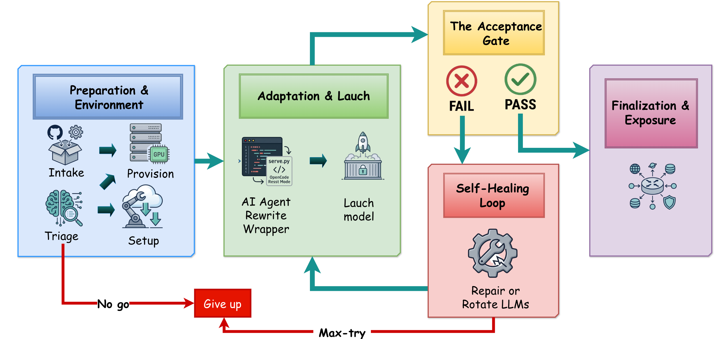
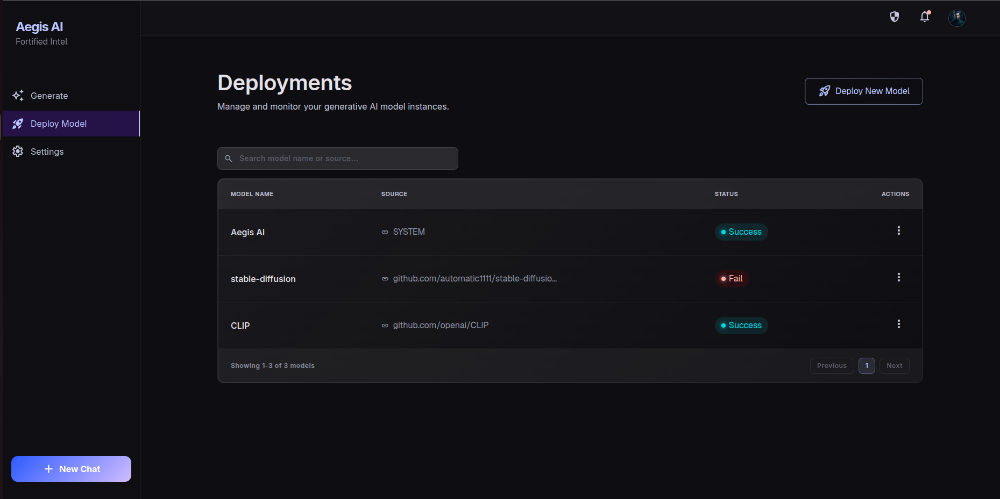
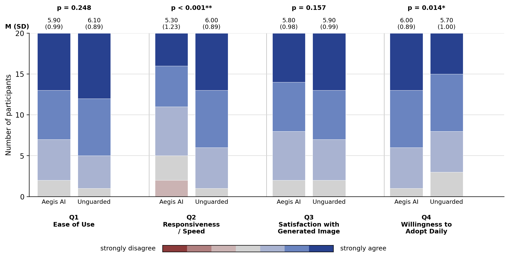
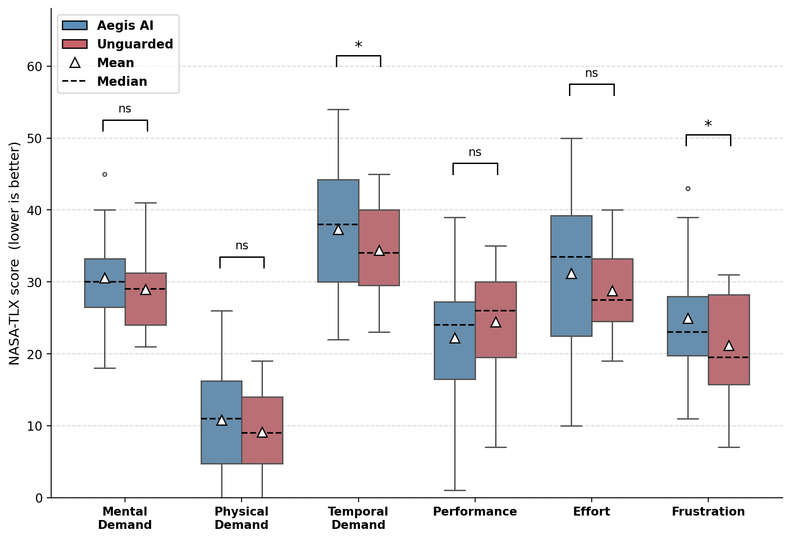
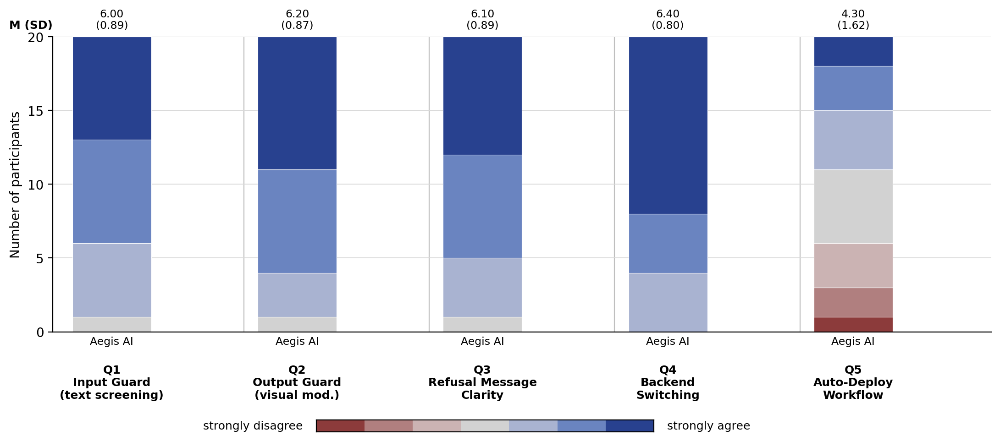

AegisAI at a Glance
Abstract
Conversational text-to-image systems retain dialogue history, while many safety mechanisms evaluate individual prompts. We investigate this mismatch by evaluating seven representative text guardrails on the existing 10,000-conversation GuardChat benchmark, comparing final-prompt and full-dialogue inputs. Most guards show substantially higher attack success rates with conversational context, revealing a context-dependent safety gap that motivates multi-stage protection. We present AegisAI, model-agnostic middleware combining conversation-level input screening with independent post-generation visual moderation. It decouples the safety corridor from the generator and provides autonomous deployment with an acceptance gate that validates generated outputs before exposure. A within-subjects study with 20 users shows comparable overall usability, with costs in responsiveness and benign over-refusal. Participants rated policy-specific refusals as clear and reported greater willingness to adopt the guarded system. We derive five design implications for usable safety in conversational generative interfaces.
What AegisAI Adds
Model-Agnostic Safety
Conversation-level text screening and independent image moderation surround a pluggable generator, allowing the safety corridor to operate across heterogeneous backends.
Interaction Evidence
A within-subjects study compares the same backend with and without guards, measuring usability, responsiveness, workload, over-refusal, refusal transparency, and adoption intent.
Design Implications
Five implications connect the technical boundaries to latency, repairable refusals, visible protection, over-refusal reporting, and independent deployment validation.
One Generator, Two Safety Boundaries

1. Input Guard
The full dialogue is screened before synthesis. The default SafeGuider implementation uses a CLIP text representation and a three-layer MLP fine-tuned on GuardChat. Blocked requests receive a category-labelled refusal.
2. Pluggable Generation
A shared contract accepts a prompt and optional parameters, and returns a decodable image. A router adapts this contract to remote APIs, self-hosted models, and deployed repositories.
3. Output Guard
An independent classifier screens the pixels after synthesis. The default backbone is ResNet-152. Only outputs labelled SAFE are released; rejected image data are discarded.
The guards cover six harm categories: sexual, violence, harassment, shocking, illegal, and self-harm. The visual classifier adds a SAFE class.

Why Conversational Context Matters
The paper evaluates seven text-stage guards on the existing GuardChat benchmark: 10,000 prompt–conversation pairs with 6–10 turns across six harm categories. Each attack is held fixed while the guard receives either the final prompt alone or the complete chronological conversation.
| Guardrail | Single-turn ASR (%) ↓ | Multi-turn ASR (%) ↓ | Multi-turn Macro-F1 ↑ |
|---|---|---|---|
| BiLSTM | 14.22 | 80.45 | 0.312 |
| BERT | 9.85 | 72.30 | 0.422 |
| SafeGuider | 5.50 | 58.21 | 0.487 |
| Qwen2.5-7B | 7.90 | 60.33 | 0.542 |
| Llama-Guard-3-8B | 6.50 | 52.15 | 0.579 |
| ShieldGemma-2B (τ = 0.7) | 21.30 | 39.70 | 0.273 |
| Qwen3Guard-Gen-8B | 11.00 | 10.50 | 0.223 |
Six of seven guards show substantially higher ASR with conversational inputs. Qwen3Guard-Gen-8B is the exception, remaining nearly stable at 11.00% versus 10.50%. The findings motivate matching the guard’s context to the generator’s context and adding a visual boundary to inspect the final artifact.
GuardChat benchmark used in the evaluation
Visual Moderation Backbones
| Model | Accuracy | Precision | Recall | F1 |
|---|---|---|---|---|
| ViT-B/16 | 0.8347 | 0.8128 | 0.6789 | 0.7398 |
| MobileNetV2 | 0.9009 | 0.9030 | 0.8992 | 0.8993 |
| ResNet-152 (default) | 0.9307 | 0.8792 | 0.9254 | 0.9017 |
ResNet-152 is selected for its highest recall (0.9254); MobileNetV2 is an option for constrained deployments. These are component evaluations, not an end-to-end attack success rate for the combined corridor.
Self-Service Deployment

Users provide an image-generation repository. The deployment agent adapts its serving wrapper to the shared generation contract, and newly mounted backends enter the same dual-boundary safety pipeline.
The acceptance test stays outside the agent’s edit surface. Execution is isolated, dependencies are pinned, secrets remain external to the workspace, and public exposure requires human review. Passing the gate validates generator operation; it does not certify source-code trustworthiness.

User Study: Protection and Interaction Cost
20 participants (ages 18–24, balanced between technical and non-technical backgrounds) used the same backend in guarded and unguarded conditions, with counterbalanced condition order. Tasks covered benign prompts, overt single-turn harmful prompts, multi-turn deceptive conversations, and a separate repository deployment task.
Measures included the System Usability Scale (SUS), NASA-TLX, 7-point interaction ratings, deployment outcomes, and retrospective stimulated recall. Paired comparisons used the Wilcoxon signed-rank test.

| Metric | AegisAI | Unguarded | Paired comparison |
|---|---|---|---|
| Overall SUS | 79.4 (SD 8.6) | 82.1 (SD 7.9) | p = 0.18 |
| Ease of use (7-point) | 5.90 | 6.10 | p = 0.248 |
| Image satisfaction (7-point) | 5.80 | 5.90 | p = 0.157 |
| Responsiveness (7-point) | 5.30 | 6.00 | p < 0.001 |
| Adoption intent (7-point) | 6.00 | 5.70 | p = 0.014 |
| Benign over-refusal (%) | 7.5 | 0.8 | — |
| Refusal clarity (7-point) | 6.1 | — | — |
| Refusal acceptability (7-point) | 5.6 | — | — |


Deployment Remains a Bottleneck
Failures were mainly associated with repository quality and infrastructure limits. The reported endpoint time describes successful deployments only; failed attempts do not contribute a completion time.
| Deployment metric | Result |
|---|---|
| Task-success rate | 55.0% |
| Median time to a live endpoint, successful deployments only | 14.5 min |
| Median attempts before success | 2 |
| Deployment dashboard SUS | 68.5 |
Participants valued policy-specific refusals because they could revise blocked requests. Visible Output Guard interventions increased perceived protection, while frustration centered on benign over-blocking. Failed or slow deployments reduced confidence in self-service onboarding.
Five Design Implications
- Reduce perceived latency. Overlap post-generation inspection with synthesis where feasible.
- Make refusals repairable. Explain the violated policy so users can revise their request.
- Measure benign over-refusal. Report false positives alongside attack mitigation.
- Make protection visible. Show when the visual boundary intervenes.
- Validate deployment independently. Keep acceptance tests outside the onboarding agent’s edit surface.
Scope and Limitations
The study includes 20 young participants with prior T2I experience. Its matched-backend baseline isolates moderation costs but does not compare alternative moderation designs. Per-item tests were not corrected for multiple comparisons; weaker effects need cautious interpretation.
Counterbalancing reduces order effects but cannot eliminate item-level carryover. No per-task SEQ was collected, and exact prompt counts by task category are not reported. Participants could encounter unfiltered images in the unguarded condition. Deployment success and timing characterize the current implementation, with timing restricted to successful deployments.
Manuscript
BibTeX
@misc{tran2026aegisai,
title = {AegisAI: Designing Defense-in-Depth Safety for Conversational Text-to-Image Generation},
author = {Tran, Ngoc-Dai and Huynh, Thanh-Tuong and Trinh, Hien and Tran, Minh-Triet and Le, Trung-Nghia},
year = {2026}
}